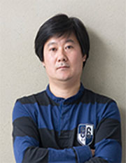

教学队伍 /张立群

张立群
设计系副教授
硕士生导师
设计管理研究所所长
联系方式
zhangliqun@163.com
在院办公
周三15:30-17:30
媒设学院A305
个人简介
1969年生于湖北。毕业于上海交通大学工业设计系，获设计艺术学硕士学位。后赴英国萨尔福德大学艺术与设计学院从事设计管理领域的研修与合作。上海工业设计协会理事，上海市现代设计法研究会理事，上海设计中心副秘书长。
研究方向
产品设计与策略，设计管理
代表成果
2007年《设计管理论文集》 上海交通大学出版社 2007年《最适合中国人生活的、未来的汽车造型设计》（NISSAN Design Forum） 主持“AsiaLink-International design management network（欧盟支助）” 主持“PMI2: UK- China Collaborative Partnerships in Employability & Entrepreneurship（AHRC UK- 英国艺术与人文科学研究委员会支助）” 主持“2010年NISSAN全线品牌概念设计（日产设计中心支助）” 国家863项目“磁悬浮巡检车开发”子项目负责人 多项实用新型专利
获奖荣誉
第11届日本大阪国际设计竞赛入围奖 上海市教学成果二等奖 上海交通大学教学成果二等奖 上海交通大学优秀教师奖